Recherche
Mes travaux portent sur la simulation numérique des écoulements turbulents et polyphasiques, et sur les échelles de résolution auxquelles la physique de ces écoulements peut être décrite à un coût de calcul acceptable.
Simulation hybride RANS-LES · Simulation résolue d'écoulements fluide-particules · Simulation multi-échelle d'écoulements diphasiques bouillants · Références
Simulation hybride RANS-LES
Dans les centrales nucléaires, le refroidissement des crayons des assemblages combustibles dépend d'un écoulement interne fortement turbulent, dont le nombre de Reynolds associé est d'environ $5\cdot10^{5}$ [1]. Les conditions de fonctionnement, une pression de 150 bar et une température de 600 K, rendent difficiles les études expérimentales sur les grilles. La simulation numérique est donc employée pour caractériser l'écoulement.
La simulation aux grandes échelles donne accès aux grandeurs instationnaires de l'écoulement et prédit avec précision la force exercée par le fluide sur la structure, mais son coût interdit les études paramétriques complètes. Pour une configuration de grille de combustible, un calcul RANS a nécessité 40 millions de mailles pour un coût de 20 000 heures CPU, tandis que la LES de la même configuration a nécessité 600 millions de mailles pour un coût de 6 millions d'heures CPU [2]. Une LES est donc environ 300 fois plus coûteuse qu'un calcul RANS. Les méthodes hybrides RANS/LES ont été développées pour réduire ce coût.
Implémentation de la méthode HTLES dans TrioCFD
La formulation Hybrid Temporal Large Eddy Simulation (HTLES) développée par Manceau [3] est dérivée du Partially Integrated Transport Model de Chaouat et Schiestel [4]. L'intérêt de la méthode réside dans son fondement mathématique, où la LES est réécrite au moyen d'un filtre temporel. Lorsque la fréquence de coupure tend vers zéro, la formulation tend vers la formulation RANS, ce qui n'est pas le cas d'une formulation LES classique fondée sur un filtre spatial. Lorsque la fréquence de coupure tend vers l'infini, la formulation tend vers la simulation numérique directe (DNS), et la viscosité turbulente modélisée disparaît de l'équation de quantité de mouvement. La transition est pilotée par le rapport local de l'énergie modélisée sur l'énergie totale [5], plutôt que par une distance caractéristique à la paroi comme dans la Detached Eddy Simulation [6].
La formulation HTLES [5] $k$-$\omega$ SST [7] a été implémentée dans TrioCFD [8]. Un terme de forçage de la turbulence a été ajouté à l'équation de quantité de mouvement afin de traiter le déficit de contraintes modélisées (MSD, pour modelled stress depletion) observé à l'interface RANS/LES [9], également appelé problème de la zone grise, et qui provient de la non-commutation du filtre avec les opérateurs différentiels.
Identification d'un critère physique de remaillage
Dans la plupart des calculs hybrides RANS/LES, le RANS est employé à la paroi et la LES ailleurs. Il peut néanmoins exister des régions du domaine où un calcul RANS donne des résultats satisfaisants et ne nécessite pas de simulation instationnaire. Dans la configuration de la marche descendante, une simulation RANS $k$-$\omega$ se comporte bien en amont de l'élargissement, alors que la production de turbulence est fortement sous-estimée dans la couche de cisaillement détachée en aval. Dans le cas général, la physique n'est pas connue et ces régions ne peuvent pas être identifiées intuitivement.
La définition du maillage est l'un des enjeux principaux des simulations hybrides RANS/LES. Deux ingénieurs étudiant la même configuration industrielle n'obtiendront pas les mêmes résultats, parce qu'ils ne placeront pas les régions de transition vers la LES exactement au même endroit. Cela soulève des difficultés pour la certification des résultats numériques. Le critère recherché doit donc être indépendant du maillage et ne dépendre que de grandeurs accessibles à partir d'un calcul RANS.
Suivant David et al. [10], le rapport de la production sur la dissipation calculé à partir d'un calcul RANS préalable est utilisé pour localiser les régions qui nécessiteraient une description LES. Le maillage est raffiné là où
$$\frac{P_k}{\varepsilon} > \alpha_{\mathrm{th}}$$Des calculs $k$-$\omega$ SST ont été réalisés sur la marche descendante et sur la colline périodique. La couche de cisaillement détachée est bien identifiée par le champ dans les deux configurations. L'ordre de grandeur du champ semble dépendre de la configuration de l'écoulement, ce qui motive une analyse de sensibilité sur la valeur seuil.
La stratégie de raffinement vise ensuite la taille de maille qui donne un rapport prescrit entre énergie cinétique modélisée et énergie cinétique totale. La valeur de 0,2 a été retenue, ce qui revient à résoudre 80 % de l'énergie cinétique turbulente [11]. Cette taille est estimée en supposant un spectre de Kolmogorov [10].
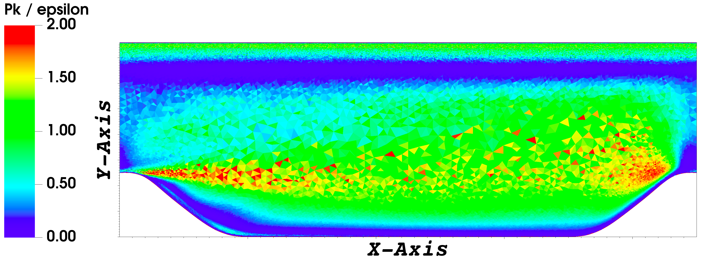
Stratégie de remaillage automatisée
La procédure proposée par David et al. [10] nécessite plusieurs calculs HTLES pour que le maillage converge, ce qui est trop lourd pour des applications industrielles. La stratégie est modifiée ici pour ne comporter qu'une seule étape de remaillage, les régions LES étant identifiées à partir du seul calcul RANS. Le remaillage est réalisé avec le remailleur Mmg [12]. Une analyse de sensibilité sur la valeur seuil du rapport est menée afin d'évaluer son influence sur les résultats HTLES. Même lorsque la région de cisaillement est bien localisée par le critère, l'estimation de la taille de maille requise à partir des résultats RANS peut produire des singularités. La taille de maille est alors bornée par une valeur minimale, et une analyse de sensibilité a également été menée sur ce minimum.
La méthodologie visée est la suivante. Une étude de convergence en maillage est d'abord menée avec des calculs RANS. Le critère physique est ensuite utilisé pour remailler le domaine dans les régions d'intérêt. Enfin, la simulation hybride RANS/LES est réalisée sur le maillage obtenu. L'implémentation de HTLES dans TrioCFD a été validée au préalable par comparaison avec des études numériques de la littérature sur les configurations de validation classiques des méthodes hybrides RANS/LES.
La méthode des volumes éléments finis [13] employée dans TrioCFD impose des maillages tétraédriques, et le modèle $k$-$\omega$ SST demande $y^{+}=1$ à la paroi. Un maillage tétraédrique non uniforme et anisotrope est donc nécessaire pour réduire significativement le coût de calcul.
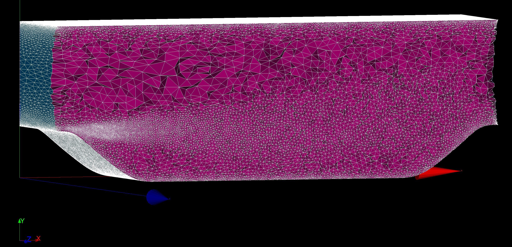
Configurations d'étude
Trois configurations sont considérées : un canal périodique à $\mathrm{Re}_\tau = 590$ [14], une marche descendante à $\mathrm{Re} = 5\,000$ [15] et une colline périodique à $\mathrm{Re} = 10\,595$ [16]. Une étude de convergence en maillage a été réalisée afin de s'assurer de la convergence des champs RANS.
Simulation résolue d'écoulements fluide-particules
Les centrales solaires à tour utilisent le flux solaire concentré pour chauffer un fluide caloporteur et produire de l'électricité au moyen d'un cycle thermodynamique. Augmenter le rendement de conversion thermique-électrique impose de porter la température de sortie du récepteur à 800 °C au moins. Les particules fluidisées sont une alternative aux fluides conventionnels, car elles supportent des températures supérieures à 1000 °C sans dégradation de leurs propriétés physiques et stockent efficacement la chaleur. Caractériser l'écoulement dans le tube récepteur et les mécanismes des transferts thermiques suppose une description locale, obtenue ici par des simulations à particules résolues menées en calcul haute performance (HPC).
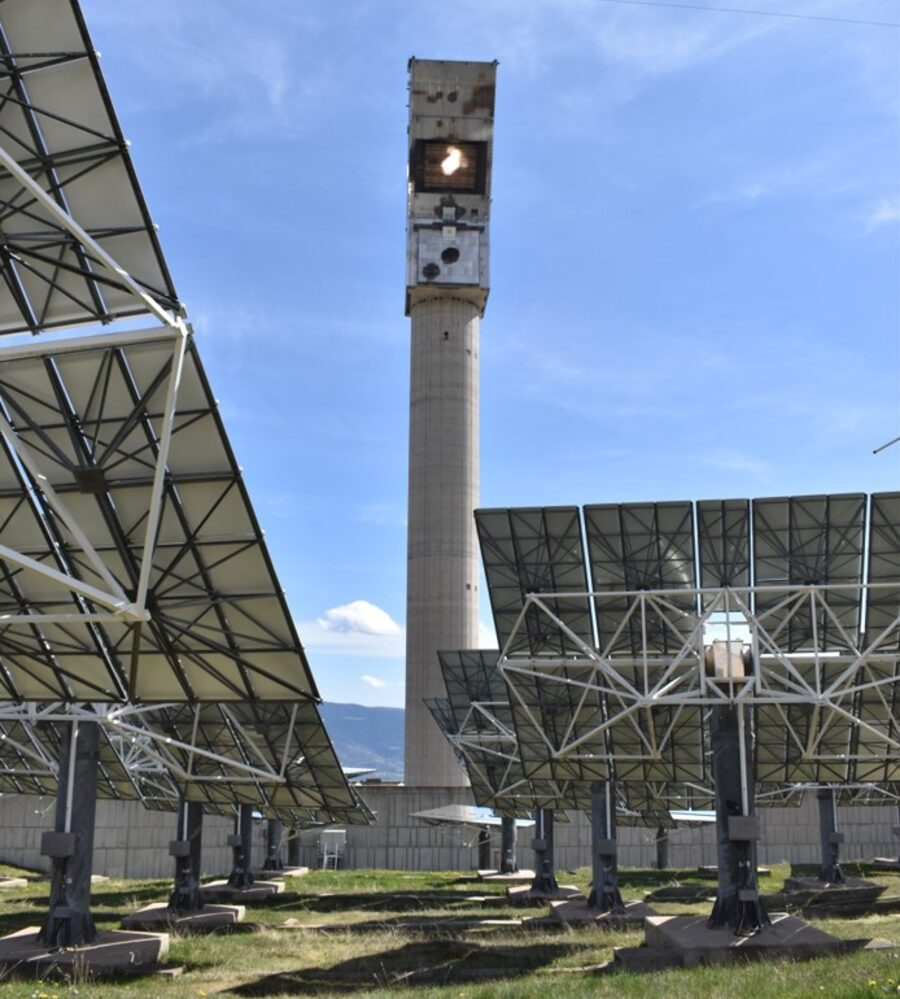
Tour solaire Thémis, Targassonne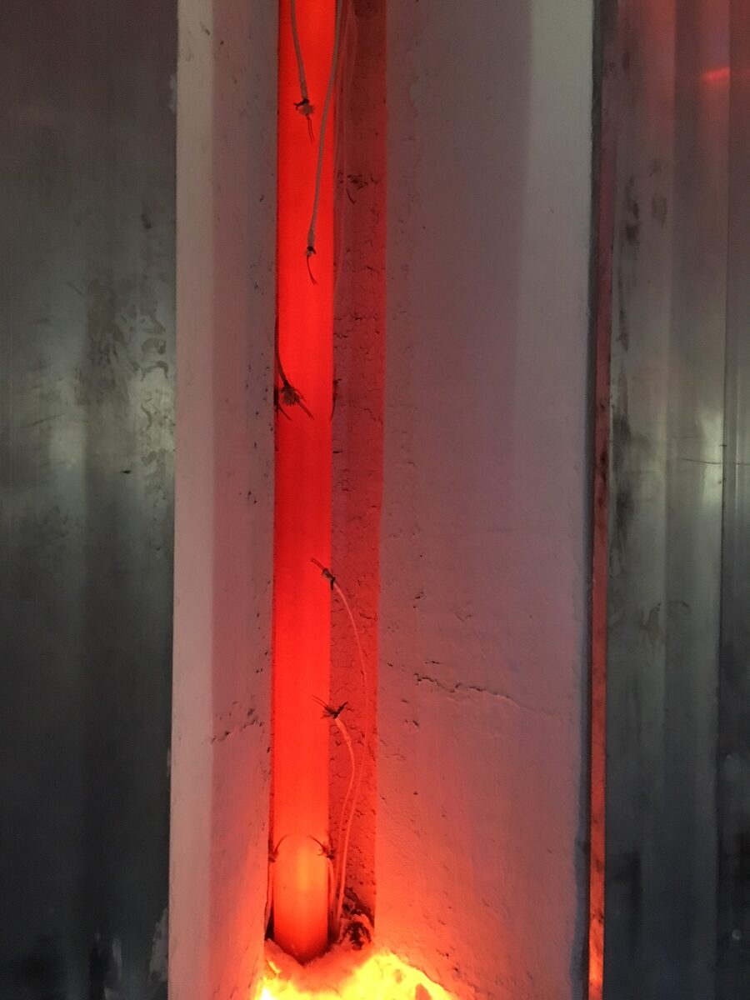
Expérience de lit fluidisé anisothermeLa PR-DNS est l'échelle de résolution la plus fine et capture toutes les interactions hydrodynamiques, mais son coût de calcul ne permet pas d'étudier les effets collectifs de plusieurs centaines de milliers de particules. Les simulations Computational Fluid Dynamics - Discrete Element Method ont été développées à cette fin. En CFD-DEM, les particules sont plus petites que les mailles eulériennes, de sorte que les effets collectifs peuvent être étudiés, mais la force exercée par le fluide aux interfaces n'est pas résolue et des corrélations sont nécessaires pour la modéliser. Ces corrélations ont souvent été établies sur des cas académiques éloignés de ceux auxquels on les applique. Une échelle de résolution intermédiaire est donc proposée dans ce travail.
Développements dans le solveur TRUST/TrioCFD
La méthode de détection des collisions a été optimisée à l'aide de la méthode Link-Cell associée aux tables de Verlet. La complexité passe de $N^{2}$ à $N$ à chaque pas de temps, et le temps de calcul global est réduit de 20 %.
Une méthode lagrangienne originale a été développée pour calculer les forces hydrodynamiques exercées par le fluide sur les particules ainsi que le flux de chaleur qu'elles reçoivent. La pression et la vitesse sont interpolées trilinéairement en deux points $P_1$ et $P_2$ situés aux distances $\delta$ et $2\delta$ de l'interface. La pression est extrapolée linéairement au centre de gravité des facettes lagrangiennes. Le terme visqueux
$$\left( \nabla \mathbf{u} + \nabla^{T} \mathbf{u} \right)\cdot \mathbf{n}$$est calculé au centre de gravité des facettes suivant un schéma décentré amont d'ordre deux. L'indicateur de phase est également calculé aux faces et aux arêtes des volumes de contrôle, ce qui améliore le calcul du flux diffusif à l'interface.
Ces développements ont été intégrés au logiciel TrioCFD et sont accessibles à ses autres utilisateurs. Les simulations ont été réalisées sur plusieurs centaines de processeurs d'un supercalculateur national, en utilisant la formulation un fluide associée à la méthode Front-Tracking [18]. La simulation la plus coûteuse a nécessité jusqu'à 3 800 processeurs pendant une dizaine de jours de calcul.
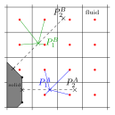
Hydrodynamique d'un lit fluidisé liquide–solide
Des simulations résolues ont été réalisées sur un lit fluidisé liquide–solide de 2 134 particules, reproduisant la configuration expérimentale de Corona [19]. Quatre vitesses de fluidisation ont été considérées, correspondant à des fractions volumiques solides allant de 0,13 à 0,35, pour des résolutions de maillage de 12, 24 et 36 mailles par diamètre de particule.
La hauteur du lit et la fraction solide sont bien prédites, même avec la résolution de maillage la plus grossière, et la loi de Richardson-Zaki [20] est retrouvée. Des résolutions spatiales plus élevées sont nécessaires pour capturer les profils d'énergie cinétique fluctuante et l'autocorrélation de la vitesse verticale du fluide. La distribution radiale de paires montre le caractère homogène du lit. Les particules ont tendance à monter au centre du lit et à redescendre près de la paroi.
Le modèle d'Alméras et al. [21] relie la variance de la vitesse du fluide à la fraction solide et à la vitesse moyenne du fluide. Pour une fraction solide donnée, l'influence des particules sur l'agitation du fluide varie avec leur diamètre et leur masse volumique. Une dépendance au nombre de Stokes terminal est donc introduite :
$$\langle u_{l,i}'^{\,2}\rangle_{(x,y,z)} = \zeta_i \, \frac{\langle U_{l,y}\rangle^{2}_{(x,y,z)}}{St_t} \, \alpha(1-\alpha)$$Les coefficients ont été calculés par la méthode des moindres carrés, ce qui donne $\zeta_v = 11.7$ et $\zeta_h = 4.82$. La corrélation prédit la variance des fluctuations de vitesse du fluide à 20 % près. Elle a été évaluée sur deux configurations supplémentaires construites à partir des mesures de vitesse de sédimentation de Mordant et Pinton [22]. La variance est bien prédite pour la première configuration. Pour la seconde, à un nombre de Stokes terminal de 10,6, la variance est sous-estimée par la corrélation. Au-delà d'un nombre de Stokes d'environ 10, le coefficient de restitution humide [23] commence à augmenter, et les collisions entre particules sont susceptibles de contribuer au transfert d'énergie. Cette contribution n'est pas prise en compte dans le modèle.
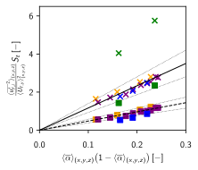
Transferts thermiques dans un lit fluidisé anisotherme
La même configuration a été étudiée en conditions anisothermes pour quatre vitesses de fluidisation et trois résolutions de maillage. Le champ de température est prolongé à l'intérieur des particules par une méthode ghost-fluid avant que le gradient ne soit calculé à la paroi, et le flux pariétal est évalué à l'ordre deux à partir des deux températures de fluide les plus proches de la paroi.
Le comportement macroscopique du lit est bien prédit avec le maillage le plus grossier. Pour une résolution de 12 mailles par diamètre de particule, en revanche, la méthode ne parvient pas à prédire le comportement thermique de l'écoulement, et une résolution de 24 mailles par diamètre de particule est nécessaire pour restituer les transferts thermiques à un coût raisonnable. Le nombre de Nusselt du fluide augmente avec la fraction solide, conformément à la corrélation de Gunn [24].
Le coefficient de transfert thermique paroi-lit augmente avec la fraction solide, en accord avec la corrélation de Haid [25], établie sur près de 2 500 expériences. L'écart à la corrélation croît avec la fraction solide, ce qui est inattendu puisque, à maillage égal, l'écoulement est d'autant moins bien résolu que la vitesse augmente.
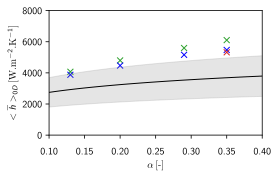
L'étude des corrélations vitesse-température montre que le transfert thermique paroi-lit est piloté par le flux de chaleur convectif turbulent associé à la vitesse normale à la paroi. La vitesse moyenne normale à la paroi est quasi nulle, de sorte que le flux de chaleur convectif moyen est faible devant la contribution turbulente. La vitesse tangente à la paroi ne contribue pas au flux de chaleur turbulent. La position du pic d'agitation est fortement affectée par la résolution du maillage, et se déplace de $x^{+} = 16$ pour 12 mailles par diamètre de particule à $x^{+} = 27$ pour 36 mailles par diamètre de particule.
Des corrélations du nombre de Nusselt particulaire issues de la littérature ont également été évaluées sur 77 simulations d'une particule en sédimentation dans un fluide au repos, pour des nombres de Reynolds compris entre 1 et 32 et des nombres de Prandtl compris entre 0,1 et 10, à une résolution de 20 mailles par diamètre de particule. Pour deux des trois corrélations considérées, le flux de chaleur prédit est à moins de 10 % d'erreur.
Simulations corrigées en sous-maille (PR-SCS)
Une distinction est proposée entre la Particle Resolved - Direct Numerical Simulation, dans laquelle les gradients de vitesse et la pression sont entièrement résolus, et la Particle Resolved Simulation, dans laquelle la résolution du maillage est de l'ordre de dix mailles par diamètre de particule et les gradients ne sont que partiellement résolus. Le coût de calcul très élevé de la première limite son application à des cas académiques, ce qui explique que l'on trouve couramment dans la littérature des simulations à une douzaine de mailles par diamètre de particule. Dans ces cas, les forces hydrodynamiques exercées par le fluide à l'interface sont sous-résolues.
Une étude de convergence en maillage de la sédimentation de Stokes d'une particule isolée a été réalisée pour des résolutions de maillage comprises entre 5 et 80 mailles par diamètre. La convergence de la force hydrodynamique calculée est d'ordre 2. Pour une résolution de maillage de 10 mailles par diamètre, une erreur relative de 10 % est obtenue sur la force.
Une correction dépendante du maillage de la part non résolue du frottement et de la pression a été construite à partir de cette étude de convergence. L'échelle de résolution qui en résulte est nommée Particle Resolved - Subgrid Corrected Simulation. La correction est validée pour des nombres de Reynolds jusqu'à $10^{-1}$ et des rapports de masses volumiques compris entre 2 et 3000. Une résolution de maillage de 10 mailles par diamètre ou plus est nécessaire pour capturer correctement la direction de la force hydrodynamique.
Des configurations gaz-solide ont enfin été étudiées afin de valider l'outil numérique pour la simulation de ces écoulements, qui sont ceux rencontrés dans les récepteurs solaires.
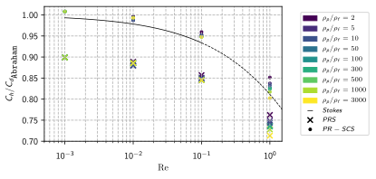
Simulation multi-échelle d'écoulements diphasiques bouillants
La génération directe de vapeur est une autre voie pour le solaire à concentration, dans laquelle l'eau est vaporisée directement à l'intérieur du tube récepteur. Dans la centrale solaire de Llo, en France, des miroirs de Fresnel concentrent le rayonnement solaire incident sur un récepteur tubulaire horizontal. L'eau est injectée à 70 bar, quelques degrés sous la saturation, et un mélange diphasique eau-vapeur est obtenu en sortie des lignes, qui peuvent atteindre 540 m de long. Le flux de chaleur surfacique appliqué au tube atteint 40 kW m$^{-2}$, à comparer aux 340 W m$^{-2}$ du flux solaire incident moyen à la surface de la Terre.
La fraction volumique de vapeur en sortie, communément appelée taux de vide, dépend du débit, de la température d'injection et du flux de chaleur surfacique. Elle est actuellement contrôlée par l'exploitant de la centrale et limitée à 80 %. Prédire la production électrique de la centrale suppose de prédire ce taux de vide, et donc de caractériser l'écoulement à l'intérieur des tubes. L'objectif de ce travail était de valider un outil de simulation numérique capable de le faire.
Modélisation Euler–Euler d'un écoulement bouillant en tube horizontal
Une approche numérique a été mise en œuvre pour étudier un écoulement bouillant dans un tube serpentin horizontal. Le modèle bifluide de NEPTUNE_CFD a été utilisé pour étudier le comportement du réfrigérant R141b dans des cas diabatiques. Le modèle repose sur le formalisme Euler–Euler des équations de Navier–Stokes, dans lequel les équations sont résolues pour les deux phases du fluide à chaque pas de temps. Une étude de convergence en maillage a été menée, qui a montré qu'une résolution de 40 mailles par diamètre de tube était nécessaire pour cette configuration.
La simulation des écoulements bouillants horizontaux est un défi. La succession des régimes d'écoulement, à savoir à bulles, à poches, à bouchons, stratifié et stratifié à vagues, doit être prédite. Ces régimes mettent en jeu des transferts de masse entre les phases et sont caractérisés par des phénomènes physiques multi-échelles. Une méthode d'identification des grandes interfaces est employée. Elle détecte les phases continues, ainsi que la présence d'une phase dispersée en leur sein, comme des bulles de vapeur dans la phase liquide ou des gouttelettes dans la vapeur.
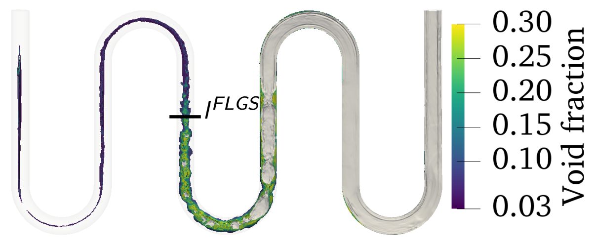
Transfert thermique conjugué avec la paroi du tube
Le transfert thermique conjugué entre la paroi du tube et le fluide a été pris en compte au moyen d'un couplage avec le logiciel SYRTHES 4.3, qui résout la conduction dans le solide en trois dimensions. Les conditions aux limites traditionnelles de Neumann ou de Dirichlet ne représentent pas une paroi dont la température répond à l'écoulement qu'elle chauffe. L'analyse thermique de la configuration a mis en évidence le fort couplage entre la distribution de température dans le solide et les régimes d'écoulement diphasique en jeu dans le domaine fluide.
Validation et analyse de l'écoulement
L'approche a été validée par comparaison avec une étude expérimentale de la littérature [27], sur la base de la reproduction fidèle des positions des transitions de régime d'écoulement diphasique dans le domaine. L'expérience consiste en un réfrigérant s'écoulant dans un tube serpentin horizontal chauffé par effet Joule. Le tube est transparent, ce qui permet une comparaison qualitative entre les simulations et les données expérimentales, et des résultats sont rapportés pour plusieurs configurations d'entrée.
L'accord a été obtenu au moyen d'une étude paramétrique des modèles physiques, à savoir le forçage thermique du tube, les modèles de turbulence, la tension de surface et les paramètres de l'écoulement bouillant, et des méthodes numériques, à savoir la résolution du maillage, le raidissement de l'interface, le pas de temps et le nombre de nœuds par CPU.
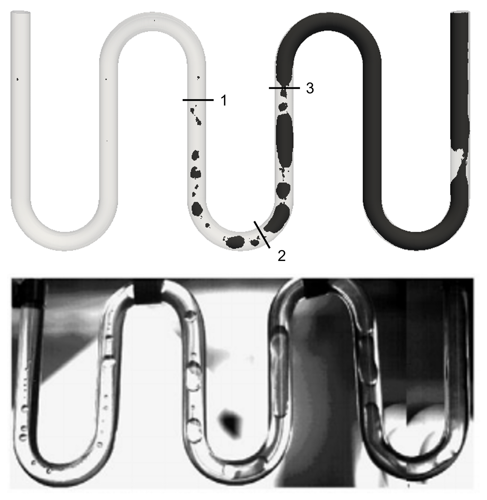
Un post-traitement original a été employé pour démêler les caractéristiques de l'écoulement. Les champs moyens et RMS de taux de vide, de température et de vitesse axiale ont été analysés dans plusieurs sections, une fois la convergence statistique atteinte. Un équilibre thermique est atteint dans le liquide saturé, mais pas dans la phase vapeur, en raison de la dynamique de l'écoulement et peut-être de la présence de gouttelettes.
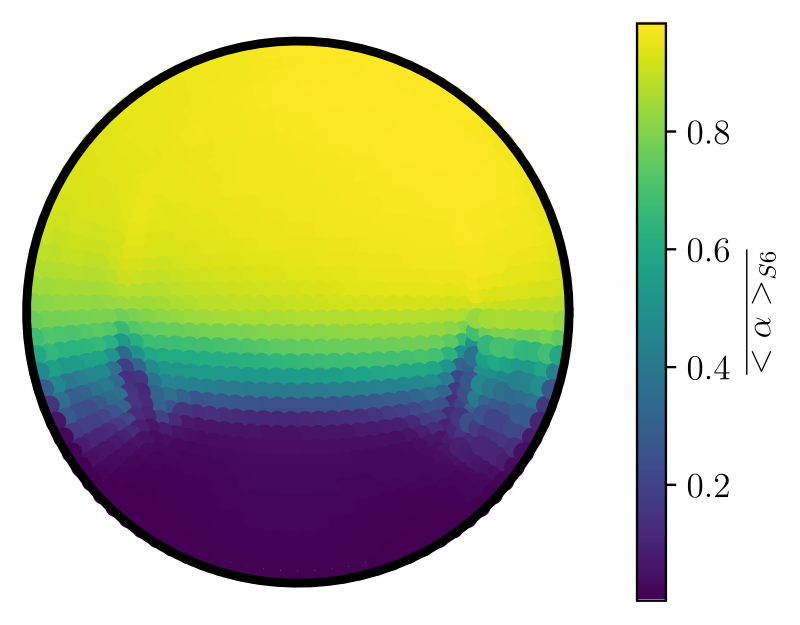
Taux de vide, moyenne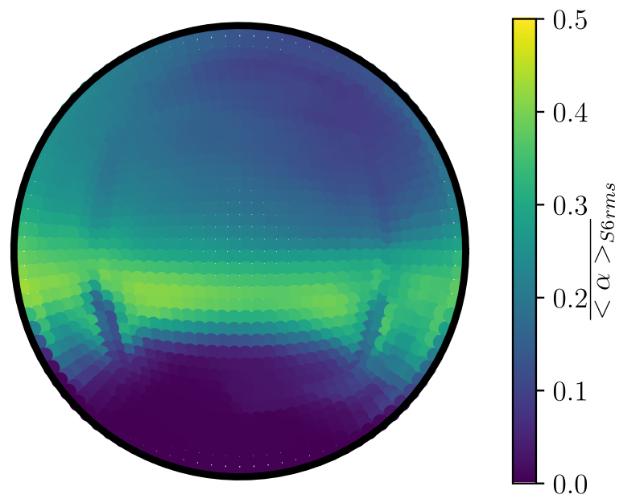
Taux de vide, RMS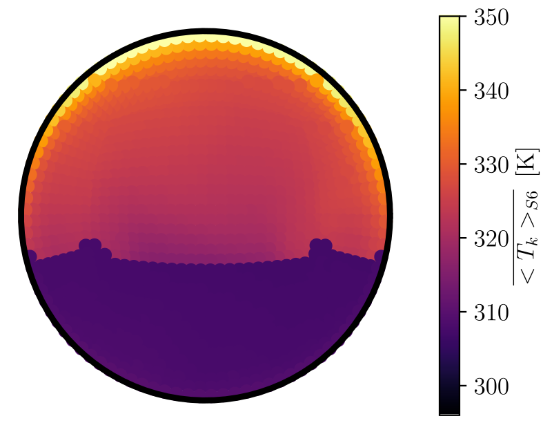
Température, moyenne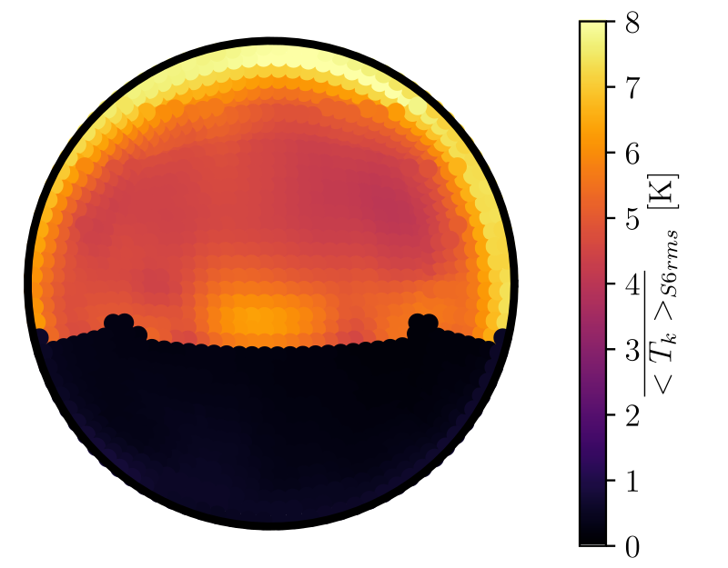
Température, RMS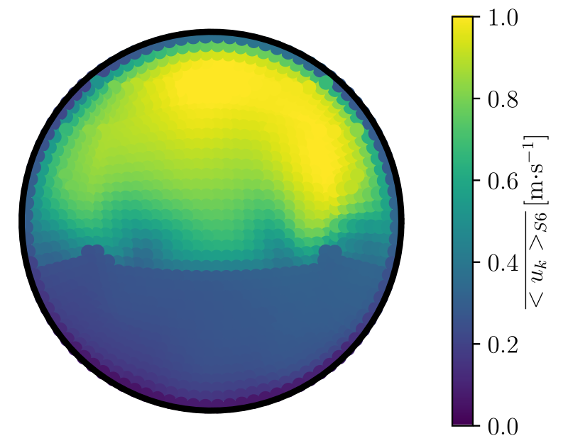
Vitesse axiale, moyenne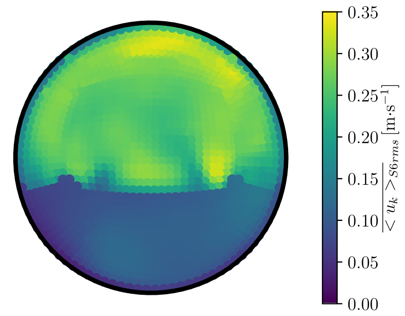
Vitesse axiale, RMSRéférences
- J.-M. Delhaye, Thermohydraulique des réacteurs, édition révisée, collection Génie Atomique, EDP Sciences, 2013. doi:10.1051/978-2-7598-1094-9
- A. Michel, A. Bergeron, M. A. Puscas, A comparative analysis of the flow in a rod bundle with two guide-tubes and mixing grids, URANS simulation and Wall-Modeled LES of the ALAIN experiment, Nuclear Engineering and Design 441 (2025). doi:10.1016/j.nucengdes.2025.114115
- R. Manceau, Progress in hybrid temporal LES, in: Papers Contributed to the 6th Symposium on Hybrid RANS-LES Methods 137 (2018). doi:10.1007/978-3-319-70031-1_2
- B. Chaouat, R. Schiestel, A new partially integrated transport model for subgrid-scale stresses and dissipation rate for turbulent developing flows, Physics of Fluids 17 (2005). doi:10.1063/1.1928607
- V. Duffal, B. de Laage de Meux, R. Manceau, Development and validation of a new formulation of hybrid temporal large eddy simulation, Flow, Turbulence and Combustion 108 (2022). doi:10.1007/s10494-021-00264-z
- P. Spalart, W.-H. Jou, M. Strelets, S. Allmaras, Comments on the feasibility of LES for wings, and on a hybrid RANS/LES approach, in: Conference of Advances in DNS/LES (1997).
- F. R. Menter, M. Kuntz, R. Langtry, Ten years of industrial experience with the SST turbulence model, Turbulence Heat and Mass Transfer 4 (2003).
- C. Calvin, O. Cueto, P. Emonot, An object-oriented approach to the design of fluid mechanics software, Mathematical Modelling and Numerical Analysis 36 (2002). doi:10.1051/m2an:2002038
- M. Mehta, R. Manceau, V. Duffal, B. de Laage de Meux, An active hybrid Reynolds-averaged Navier-Stokes/large eddy simulation approach for gray area mitigation, Physics of Fluids 35 (2023) 125116. doi:10.1063/5.0174381
- M. David, M. Mehta, R. Manceau, On the feasibility of a self-adaptive strategy for hybrid RANS/LES based on physical criteria and its initial testing on low Reynolds number backward-facing step flow, Flow, Turbulence and Combustion 114 (2025). doi:10.1007/s10494-024-00583-x
- S. B. Pope, Turbulent Flows, Cambridge University Press, 2000. doi:10.1017/CBO9780511840531
- C. Dapogny, C. Dobrzynski, P. Frey, Three-dimensional adaptive domain remeshing, implicit domain meshing, and applications to free and moving boundary problems, Journal of Computational Physics 262 (2014). doi:10.1016/j.jcp.2014.01.005. mmgtools.org
- P. Emonot, Méthodes de volumes éléments finis: applications aux équations de Navier-Stokes et résultats de convergence, thèse de doctorat, Université Claude Bernard, 1992.
- R. D. Moser, J. Kim, N. N. Mansour, Direct numerical simulation of turbulent channel flow up to $\mathrm{Re}_\tau = 590$, Physics of Fluids 11 (1999). doi:10.1063/1.869966
- E. Lamballais, Direct numerical simulation of a turbulent flow in a rotating channel with a sudden expansion, Journal of Fluid Mechanics 745 (2014). doi:10.1017/jfm.2014.30
- M. Breuer, N. Peller, Ch. Rapp, M. Manhart, Flow over periodic hills: numerical and experimental study in a wide range of Reynolds numbers, Computers and Fluids 38 (2009). doi:10.1016/j.compfluid.2008.05.002
- R. Gueguen, G. Sahuquet, M. Tessoneaud, JL. Sans, E. Guillot, A. Le Gal, R. Garcia, S. Mer, A. Toutant, F. Bataille, G. Flamant, Heat transfer in a fluidized bed tubular solar receiver. On-sun experimental investigation, Solar Energy 265 (2023) 112118. doi:10.1016/j.solener.2023.112118
- S. Unverdi, G. Tryggvason, A front-tracking method for viscous, incompressible, multi-fluid flows, Journal of Computational Physics 100 (1992). doi:10.1016/0021-9991(92)90294-9
- A. A. Corona, Agitation des particules dans un lit fluidisé, thèse de doctorat, Institut National Polytechnique de Toulouse, 2008.
- J. Richardson, W. Zaki, The sedimentation of a suspension of uniform spheres under conditions of viscous flow, Chemical Engineering Science 3 (1954). doi:10.1016/0009-2509(54)85015-9
- E. Alméras, O. Masbernat, F. Risso, R. Fox, Fluctuations in inertial dense homogeneous suspensions, Physical Review Fluids (2019). doi:10.1103/PhysRevFluids.4.102301
- N. Mordant, J.-F. Pinton, Velocity measurement of a settling sphere, European Physical Journal B 18 (2000). doi:10.1007/PL00011074
- D. Legendre, R. Zenit, C. Daniel, P. Guiraud, A note on the modelling of the bouncing of spherical drops or solid spheres on a wall in viscous fluid, Chemical Engineering Science (2006). doi:10.1016/j.ces.2005.12.028
- D. Gunn, Transfer of heat or mass to particles in fixed and fluidised beds, International Journal of Heat and Mass Transfer 21 (1978). doi:10.1016/0017-9310(78)90080-7
- M. Haid, Correlations for the prediction of heat transfer to liquid-solid fluidized beds, Chemical Engineering and Processing 36 (1997). doi:10.1016/S0255-2701(96)04177-3
- F. Abraham, Functional dependence of drag coefficient of a sphere on Reynolds number, Physics of Fluids 13 (1970). doi:10.1063/1.1693218
- Z. Yang, X. F. Peng, P. Ye, Numerical and experimental investigation of two phase flow during boiling in a coiled tube, International Journal of Heat and Mass Transfer 51 (2008). doi:10.1016/j.ijheatmasstransfer.2007.05.025